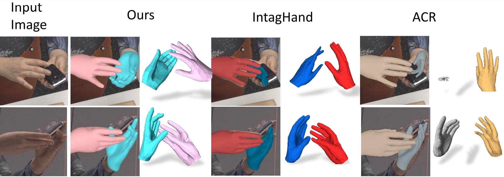
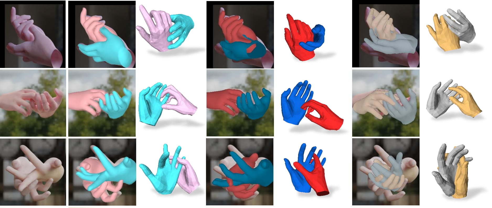
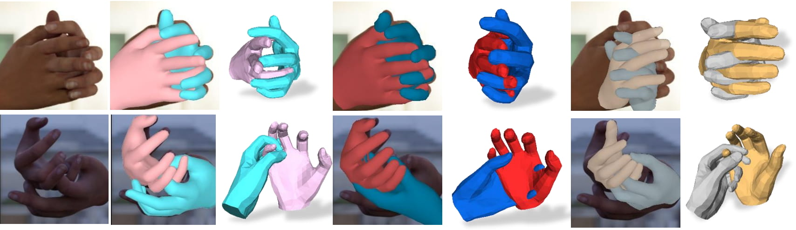
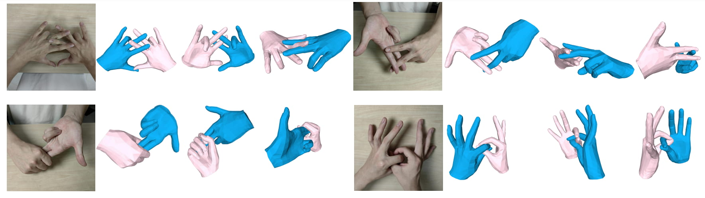
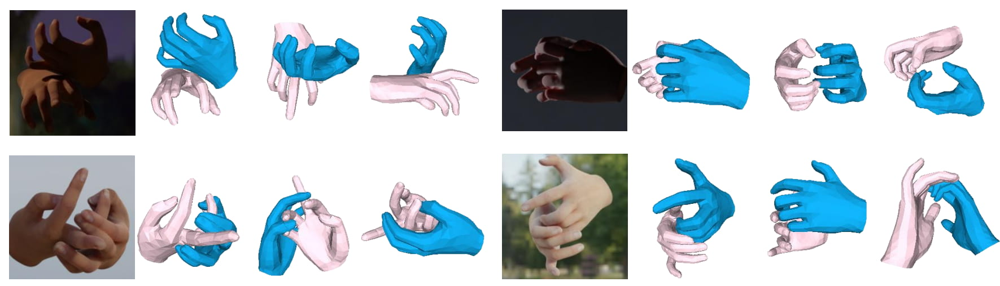
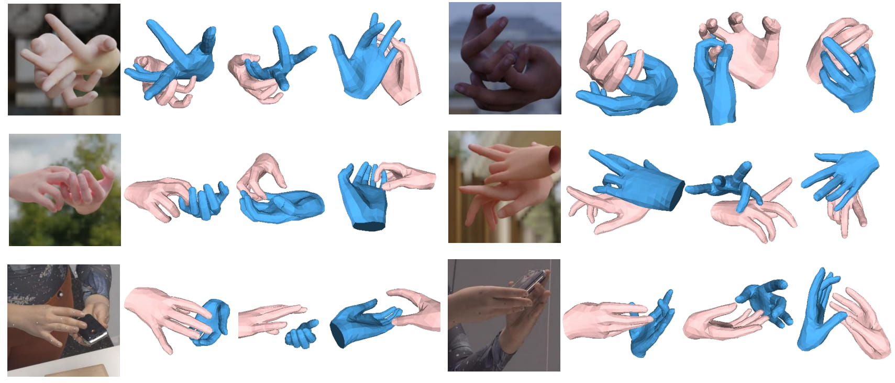
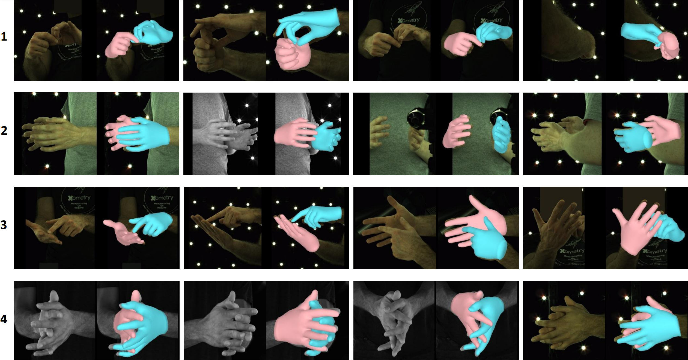
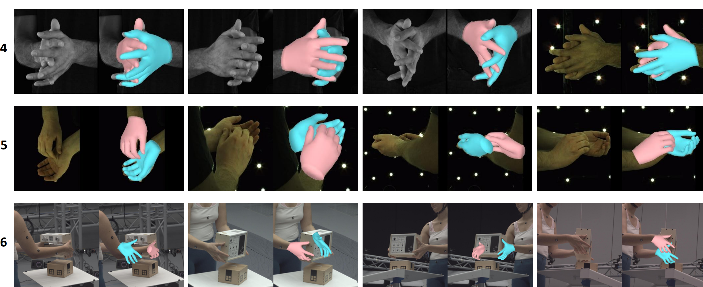
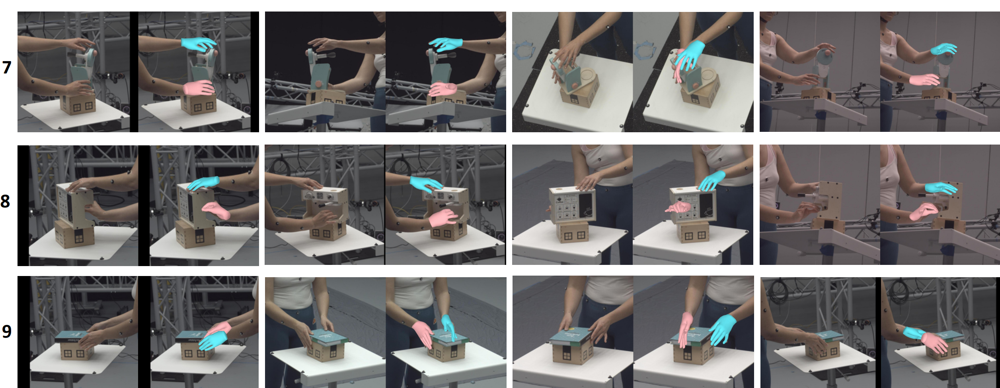

OmniHands: Towards Robust 4D Hand Mesh Recovery via A Versatile Transformer
OmniHands robustly recovers interactive hand meshes and their relative motion from monocular inputs, while generalizing to complex interactions and challenging multi-view scenarios.
Single Image Input
Robust reconstruction results on challenging monocular inputs, including occlusion, unusual pose, and difficult interaction configurations.



OmniHands demonstrates robust performance in complex single-image cases.
Complex Interactions
Reconstruction results on dense hand-hand interactions with severe ambiguity, contact, and self-occlusion.



OmniHands remains stable and accurate in difficult interaction-heavy scenes.
Multi-Cameras
Applications to multi-view setups show strong robustness under occlusion and large viewpoint changes.



OmniHands can handle highly occluded cases when applied to multi-view tasks.
Paper and BibTeX
If you find OmniHands useful in your research, please consider citing our paper.
@article{lin2026omnihands,
title={OmniHands: Robust Motion Capture of Interactive Hands via A Versatile Transformer},
author={Lin, Dixuan and Zhang, Yuxiang and Li, Mengcheng and Jing, Wei and Yan, Qi and Wang, Qianying and Liu, Yebin and Zhang, Hongwen},
journal={ACM Transactions on Graphics},
year={2026},
publisher={ACM New York, NY}
}